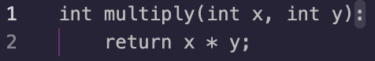

Home
About
Interactive
Help
Question 4 Answer:

Here the issue arises when marking the scope of the function. In C we have to use brackets instead of colons:
int multiply(int x, int y)
{
return x * y;
}